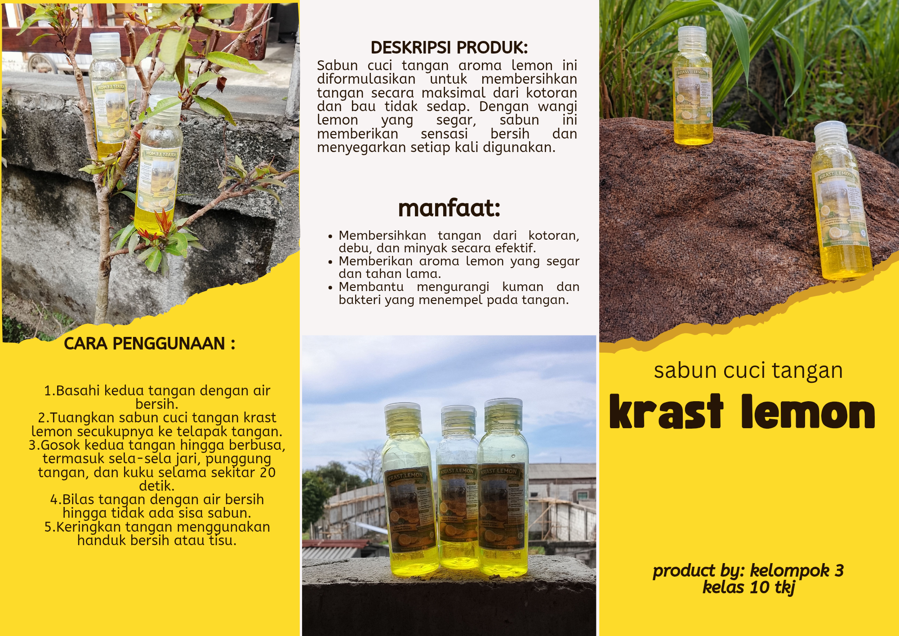
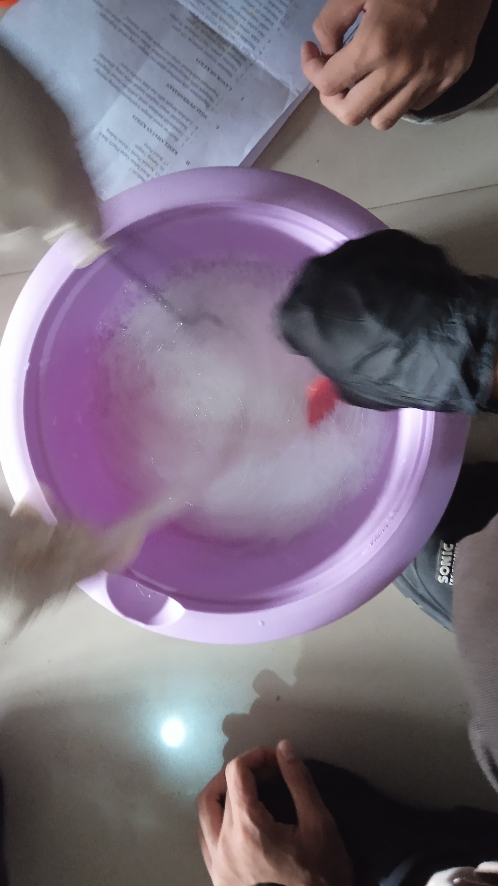
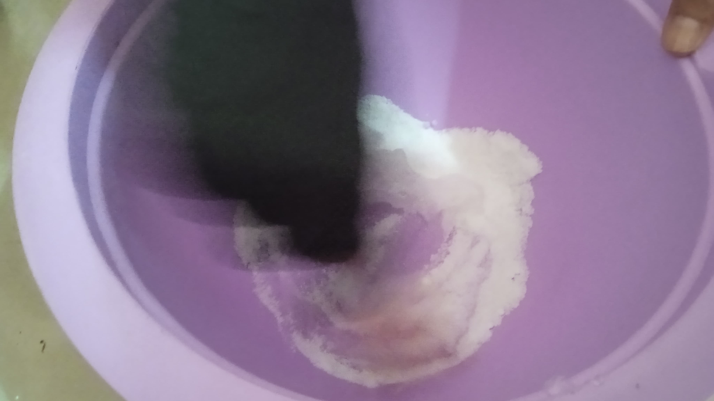
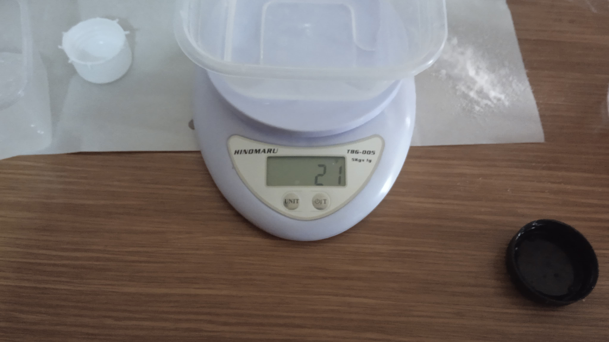
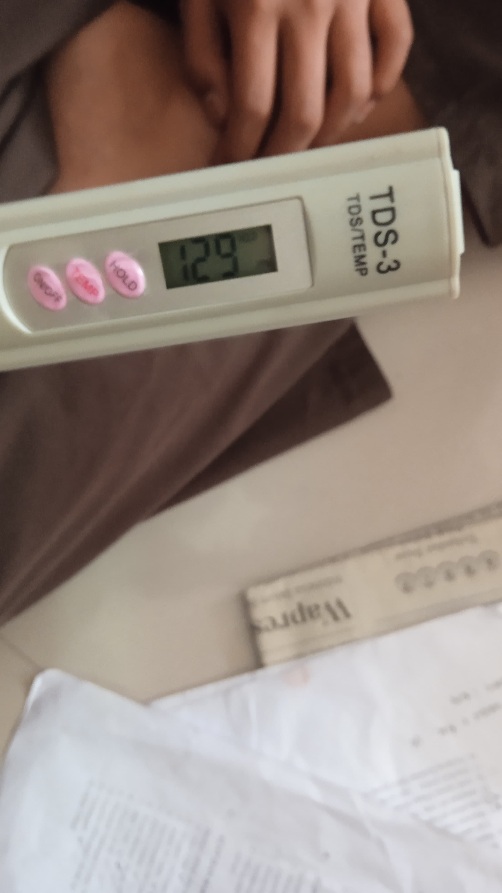
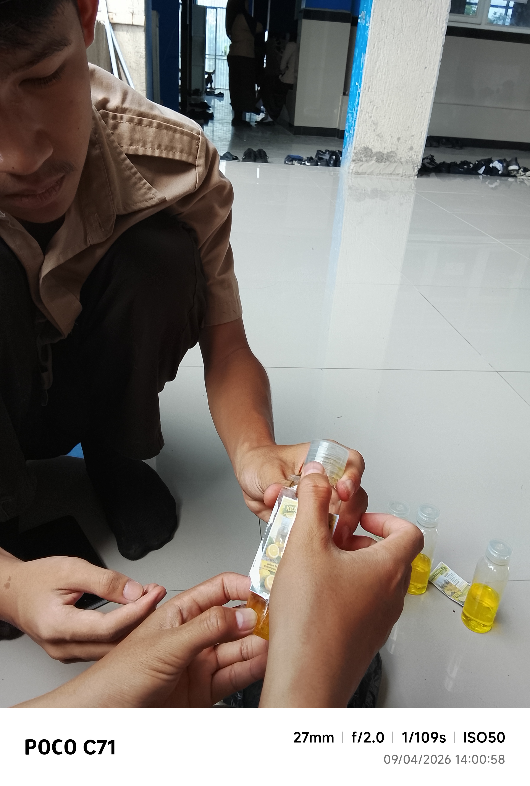

Laporan Pembuatan sabun cuci tangan
Identitas Kelompok
Kelompok 3
Anggota:
- Kiki Ardiansah(25101854)
- M.Teguh Suhardianto (25101918)
- M.Azmi apriliano (25101872)
- Satria leviano (25101917)
- Rivan Ibrahim (25101943)

1. Penjelasan Produk
Sabun cuci tangan adalah produk pembersih yang digunakan untuk membersihkan tangan dari kotoran, minyak, dan kuman.
2. Alat dan Bahan
Alat:
- Pengaduk
- sarung tangan
- celemek
- baskom
- 4 Wadah Kecil
- corong
Bahan:
- Texapon 120 gram
- Garam(NacL) 30 gram
- Sulfat 30 gram
- EDTA 2 gram
- Air Bersih 900 ml
- Foam Booster 20 ml
- Gliserin 10ml
- BKC 3ml
- essence oil 10ml
- pewarna makanan 6 tetes
3. Perubahan yang Terjadi
perubahan kimia karena dalam proses pencampurannya terjadi interaksi antar zat yang menyebabkan perubahan sifat dari bahan-bahan tersebut menjadi suatu produk baru berupa sabun cair yang memiliki fungsi berbeda dari masing-masing bahan penyusunnya, misalnya texapon yang awalnya hanya bahan surfaktan setelah dicampur dengan air dan bahan lain menjadi larutan pembersih yang mampu mengangkat kotoran, kemudian penambahan garam tidak hanya mengubah kekentalan tetapi juga mempengaruhi struktur larutan, selain itu BKC memberikan sifat antibakteri yang tidak dimiliki oleh sebagian besar bahan lainnya sebelum dicampurkan.
4. Alasan Penamaan Produk
5. Langkah-langkah Pembuatan
- Masukkan texapon sebanyak 120 gram.
- Masukkan garam (NaCl) 30 gram,sulfat 30 gram dan EDTA 2 gram.
- Aduk hingga merata sampai tercampur menjadi putih susu.
- Masukkan air sebanyak 900 ml sedikit demi sedikit (tidak langsung semua).
- Aduk semua hingga tercampur rata dan mengental.
- Jika sudah mengental, tambahkan air sedikit demi sedikit secara terus-menerus jika dirasa terlalu kental.
- Sisakan air sebanyak 100 ml.
- Masukkan foam booster 20 ml,gliserin 10 ml dan BKC 3 ml dan aduk
- masukkan esence oil 10 ml dan pewarna makanan 6 tetes
- Masukkan sisa air 100 ml ke dalam campuran.
- Aduk semua hingga mengental.
- packing ke dalam botol pump jika sudah siap untuk di gunakan
6.hasil produk


7.dokumentasi










